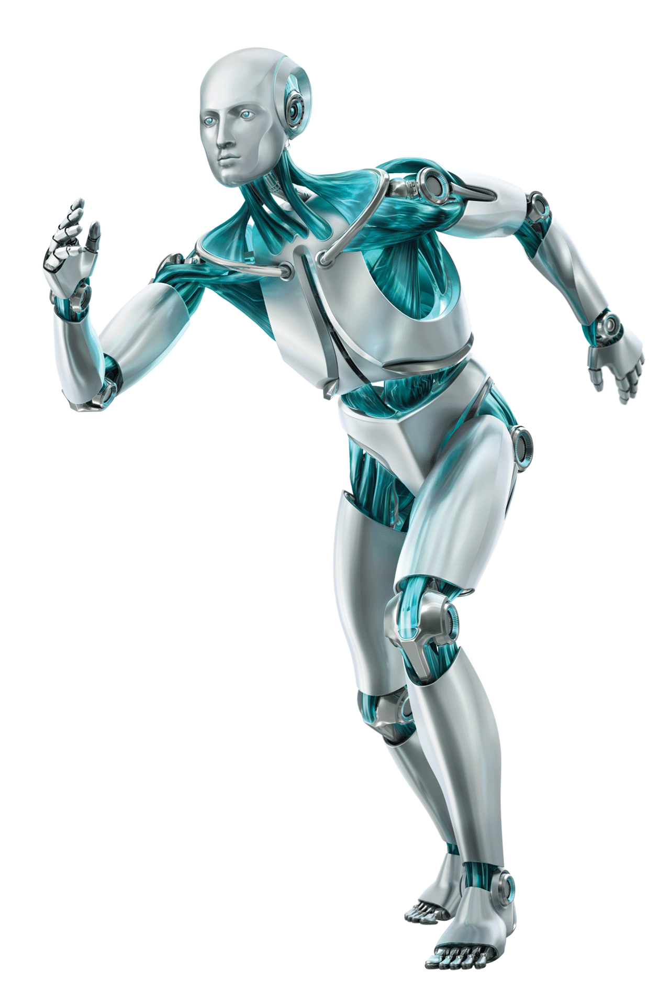
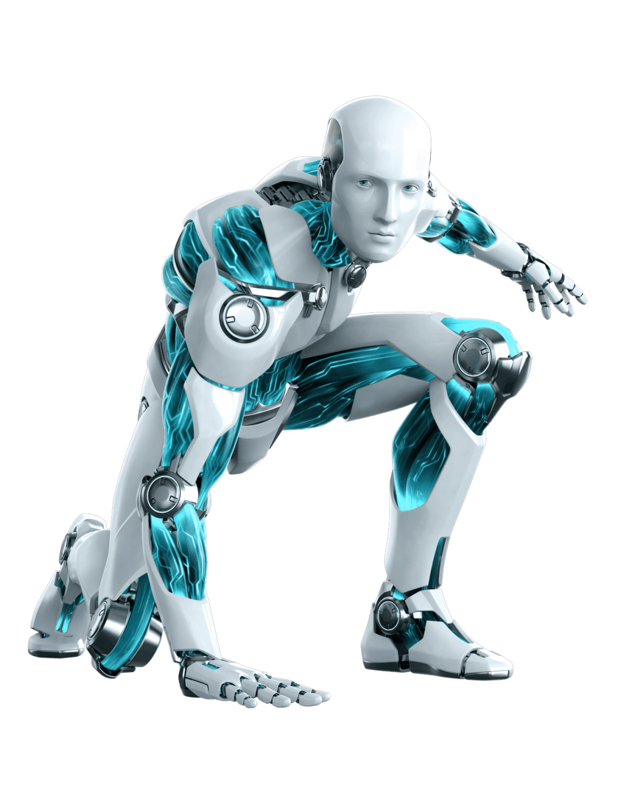
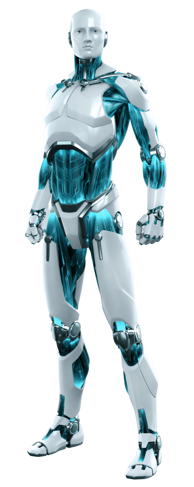

| n e w m a n | model about |
Become the next breed of humans.To what extent will robots and humans merge? |
“I am newman Robotics’ latest human-like robot, created by combining our innovations in science, engineering and medicine. Think of me as a personification of our dreams for the future of Humans, as well as a framework for advanced AI and Robotics research, and an agent for exploring human-robot experience”.
  Newman Robotics is an AI and Robotics company dedicated to creating socially intelligent machines that can enrich the quality of our lives as well as replace us as the next evolution of the human race.
Founded by Kelechi Alan, Ph.D., the Newman team has built a worldwide reputation for creating robots that look and act genuinely alive, including renowned robot character Newman V1.0. Our innovations in AI research and development, robotics engineering, experiential design, storytelling and material science bring robots to life as engaging characters, useful products, and as the next component in human evolution.
Our robots serve as AI platforms for research, education, medical and healthcare, sales and service, and entertainment applications, and will evolve to become benevolent, super-intelligent living machines who advance civilization and achieve ever-greater good for all.